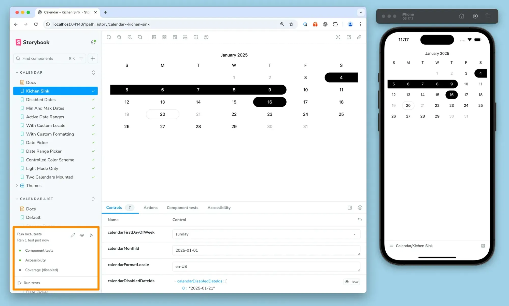
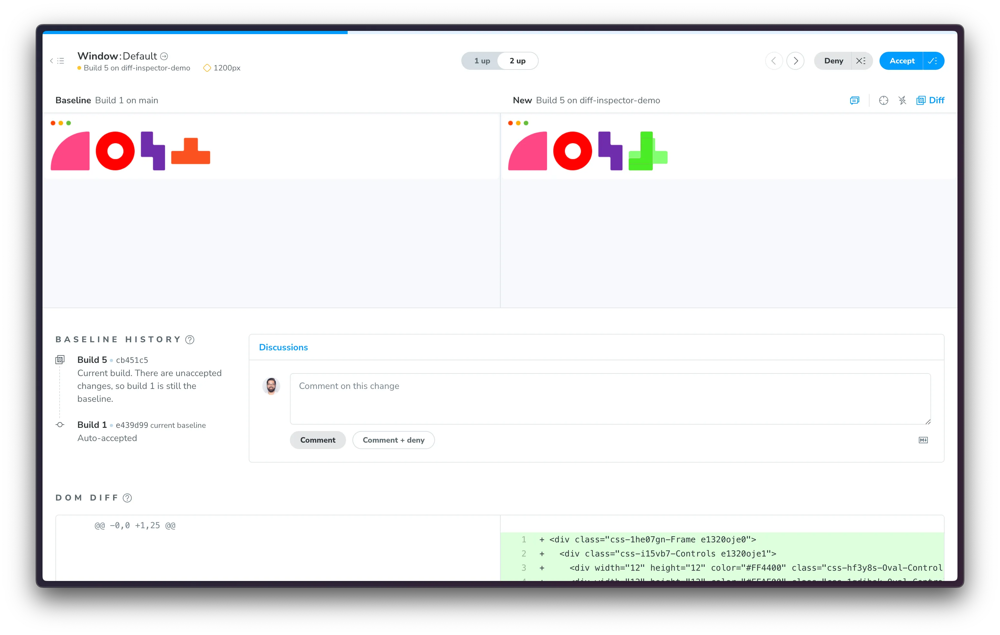

VanJS
July 16th, 2025
Gavin Mogan
Senior Software Engineer at Digital Ocean.
https://www.gavinmogan.com
Hey everyone,
I'm Gavin. I am a Senior Software Developer at Digital Ocean, currently on the billing team doing backend
golang work. I don't really get to do javascript that much anymore, but I've been coming to vanjs since the
before times and as a huge fan I love to give back...
Testing?
means of testing: such as
(1) something (such as a series of questions or exercises) for measuring the skill, knowledge,
intelligence,
capacities, or aptitudes of an individual or group
(2) a procedure, reaction, or reagent used to identify or characterize a substance or constituent
— Merriam Webster
So what am I here to talk about today? Well Miram Webster defines test as a means of testing
...
Just kidding, not only is that confusing, but i'm not going to do a highschool style presentation.
Why should you listen to me?
I'm here right now!
I've made so many mistakes so you don't have to.
Worked at several testing compainies.
Was on the board for the open source project Jenkins.
Been interviewed about testing on podcasts.
So... why should you listen to me?
Well there's something for being up here right?. I like to say I'm not better at something, I've just broke
it first. I'm here to share what I have learned to fast forward you all.
I've also worked at several saas companies that sell testing related services, tooling and
products. I've had plenty of exposure to all the good stuff. I was on the board of the open source project
Jenkins, which I believe still heavily used to run tests,
though I wont be talking about it today.
What is it good for?
The urge to start singing about war and what it is good for, totally confusing the younger people here is so
high.
Buuuut...
Documentation
Why does this function return this?
What does real world input look like?
One surprising thing i've learned about testing, especially in open source projects where documentation can be
lacking, is to see the actual usages of a library or application in action. I can see what data they are
expecting, and how its handled. Does a lot of the expiramentation for me.
Confidence
in future changes
current changes
refactors
One of the talks last last month talks about how AI coding assistant tools can actually use tests to make sure
new code suggestion actually doesn't break old behaviors. I believe it can also help with code style based on
the topics mentioned in previous slide.
I'll talk about it more later, but I just love creating tests for bug tickets I'm assigned. It helps me
understand the problem then I can guarantee long into the future that the specific behavior won't happen
again.
What is testing?
Produced by ChatGPT
So I was going to put up a diagram of the testing pyramid and tell ya all how I didn't agree with all the
steps, but apparently I misremembered and there's no standard.
— The Practical Test
Pyramid - Martin Fowler
The closest to official one I could find is this one by martin fowler which says you should have the least
amount of ui or integration tests, and the most of unit tests
Gavin's testing pyramid?
End To End (e2e) tests (aka integration).
Mock e2e tests.
"Simple" tests.
So gavin version. I'll go into details but in order from most expensive, to cheapest... End to end tests.
End
to end tests but with mocks... So not end to end and lastly Unit tests. There are more types, but this is
what I usually go by.
The idea is to have the least of the first and the most of the last, as they are fastest and easiest to
isolate.
End to End Tests
"everything real"
Actual Client (Browser)
Actual Server
Real Credentials
Actual Database
Examples
First up we have end to end tests. The goal is to emulate user behavior and confirm everything works together.
This means as much real life stuff as possible. Real browsers, real apis calls, and talking to the backend
properly.
While its not always possible to automate a production environment, especially since there's often tooling to
prevent bots and other abuse, you can get pretty close. Maybe add your ips to a allowlist so it doesn't get
caught by security. Its a slippery slope though since you can easily hide actual issues and not catch them.
E2E Strengths
Makes sure everything works together
Closest to end-user behaviors
External changes get highlighted
E2e Strengths... the goal is to test the whole system. So make sure everything works together. Api responses.
UI
responses. For example, if suddenly your login apis start requiring two factor auth, but you haven't enabled
it on the front end, the tests will fail. It can also highlight differences between browsers, and there are
tools to help you confirm behavior with limited network connections etc.
E2E Weaknesses
Hard to setup and control state
Slowest
Flakey
Weaknesses. Since you are doing everything with real behaviors, it can be tricker to create or reset states.
You can't just change runtime variables like having a user with an existing shopping cart from a previous
session. With e2e tests you'll have to either have a user kept around that has that state permanently, or go
through all the steps to populate a shopping cart, but that wont let you test a legacy format.
Also, there's so much stuff out of your control. If an error message from the backend slightly changes, that
can cause your tests to fail, and depending on what framework you use, you might not be able to tell why the
test is failing, just that it cant find the string you want.
E2E Tools
Browser
Playwright
Cypress
Selenium
TestCafe
Tooling. I'm far from an expert here as I'm no longer doing frontend development full time but i've included a
few I've heard about.
Selenium is one of the oldest browser automation tools out there. You can find so much guides and tips for it,
but at the same time, it breaks the easiest. Playwright and Cypress are much newer and more reliable, and at
least to some degree, have backing of browser developers. Lastly there's testcafe. From my research it uses
client side javascript to trigger browser behavior, as such it can let you test on anything from modern
browsers, phones, to even smart tvs.
I'm also mentioning appium because some of friends created and maintain it. It lets you automate a phone, so
install apps, click on things, etc. Its really quite powerful.
Mocked E2E Tests
A hybrid model between full e2e and isolated testing.
Call mocks or fake endpoints to emulate.
Bigger units of work, but also more control.
Examples
Login Form
REST server endpoint
Okay, Mocked E2e tests, or integration tests, that tends to be what I write more of now, even though I
probably shouldn't. I'll use a real database, but i might mock out external systems like stripe. Especially if
I know said system is pretty stable.
Mocked - Strengths
Can control states
Easy to spot new dependencies
Strengths...
With using mocks and stubs and factories and all the other terms, you have a lot more control. For example,
instead of setting up a new user, marking them as abuse, and then trying to login. With mocks you can just
tell the user service to return a user in the right state.
And with most mocking libraries, they can yell at you when your code starts to connect to unmocked systems
or endpoints
Mocked - Cons
Have to implement and maintain mocks or sample data
Can lead to complex mocks that dont actually test things
Can easily break if your code uses globals
Can hide external systems changing
Cons.. Anyone who has done tests for a while will tell you how dangerous mocks can be. If your mocks just
return simple states, like static json files, its pretty safe, but it becomes so easy for your mocks to become
more dynamic. Return different states based on inputs. Soon your tests will start testing your mocks instead
of testing the systems the mocks use.
In non typed systems, it can also not be obvious when the system you are mocking has changed. This can mean
something small like you are assuming an whole number integer, when the api now returns a float or string.
Injecting mocks can be hard too, there are tools to make it easier, but if for example your function makes an
http call, and you use a global http library, it'll be hard to isolate the client enough that it doesn't leak
to other tests, or a test could be run in parallel.
Mocked - Tools
Probably can include most e2e and unit test suites too
Javascript
Nock
Jest
Sinon
Mock Service Worker
Golang
Gomock
Counterfeiter
Mockery
Okay, tools again. I'm trying my best to include tools from other languags and systems. They genearlly all
work the same.
Nock has always been an under utilalized tool. I don't know if it will work in browsers, but its great in
express and nodejs. You can just target specific http requests and mock out responses. It can yell if the
targets arn't found so can highlight when your systems start making calls you forgot about.
Jest is a pretty big industry standard these days. I'll talk about it more when I talk about testing
frameworks, but it can also provide mocks.
Sinon has been around forever, and for good reasons. Its mocks are straight forward and reliable
Mock service worker is one I just learned about, it sounds like its nock, but for browsers. It gives you
the ability to intercept http calls and inject responses.
"Regular"/"Unit" tests
Focus on small units of work.
Make them fast, and have a ton of them
Examples
Sum function
Convert one data model to another
Password strength component
Okay, last item from my pyramid is what I'm calling unit tests. Ideally you only ever test a single function
or single unit of work, but but with react that can get a bit complicated. The main thing is they shouldn't be
testing anything it doesn't own. So no database, rest, graphql or anything else.
Unit Tests - Strengths
Fast
Just focus on input and output
Easy to write
Easy to maintain
Can be run in parallel (unless you use globals ðŸ˜)
Indirectly can lead to maintainable and understandable code
Since unit tests are not interfacing with any other systems, they are usually the most fast. You pass in some
inputs, and you check the outputs, you don't need to wait.
Because of this, the more practice you get with them, the more you want your functions to work in that way. So
for normal functions you can probably figure out how that works, just have parameters. But for things like a
react component, that means you want to have attributes not hooks. Have the hooks outside the component at the
integration level.
Then quickly you start writing functions and units that are small and do like one thing. It takes a while, and
I'll def go over how to do that later, but it does help.
Unit Tests - Cons
Doesnt break when external systems change
Devevelopment before testing often involves coming back and redoing development to make it testable
Globals can make it hard to isolate
The main downside is because you are testing inputs and outputs, there's no indication when external systems
change the inputs. In truth it shouldn't matter because you should have other tests that test those things,
but it is a gap here.
Also globals can make things really hard to test. If you use like a window dot location, or a process dot env,
since they are not passed in as inputs, you can't really control them or parallelize without issues.
Both are probably good reasons to refactor though.
Unit Tests - Tools
A very non exhaustive list
I tried to list all I could think of, but dont worry, they all more or less work the same
way
Getting Started
So I got started with testing long before I knew what formal testing was. My first job was
working directly on clients servers, live, with no backups. It was awful. So i got in the habit of isolating
what I was working on so I could run a simplified version on my own computer first.
Getting started pt2
You don't need a formal framework
const Users = require('./models/users.js');
Users.createUser({
username => "zoidberg",
password => "doctor"
}).then(function(user) {
console.log($user);
});
Its totally fine, especially for your own projects, just to do things like this. Create a
file that imports your functionality and runs that. The only difference between that and a official test is
the frameworks to get it running.
So start there. Get in the habit. See the benefits.
Getting started pt3
Testing every scenario
I think the biggest pitfall to get testing started is that people try to do everything at once. Its okay that
your test only checks the "everything was done right" path.
There's nothing wrong with that. Testing is an investment in the future. You can and should add more over
time, but one test is so much better than no tests.
Start with bugs
Already include reproduction steps
Already need to have a way to say its done
So my suggestion, if you arn't going to do tests with development, is to setup tests when you get bug reports,
sure start with the simple ones, but start there.
A good bug report will have repoduction steps, so you can design the scenario, and by reproducing the bug,
you understand the bug. Ideally you start with your test failing in that scenario.
Then you fix the problem. Now your test should show the problem is fixed.
Yay! you just did test driven development (sorta).
But all you are saying is this very exact scenario won't happen again. You don't need to do more than that.
It'll come over time
Getting Started for real
Aka frameworks and automation
Okay, how do you get ready for real?
Install tooling
$ npm install --save-dev jest
So i'm going to be using jest for my examples. Its the tooling i've most recently used in the javascript
space, and most other tools will be more or less the same. I will say its from acebook and i've found its
really the easiest to get started.
So first step is install jest into your project.
sum.test.js
const sum = (a, b) => a+b;
test('adds 1 + 2 to equal 3', () => {
expect(sum(1, 2)).toBe(3);
})
$ jest sum.test.js
Second is to create a test function, run your function, and check the output.
Lots of unit testing frameworks try and make things readable as english. In this case, you are describing the
test, then running the function, and confirming the return value is what is expected.
Success!
$ jest sum.test.js
Lastly run the test. With jest it should just be jest and then your filename or directory. Most other
frameworks work the same way.
Automate it!
Code Servers
Commit hooks
Github / Gitlab actions
SaaS
Circle CI
Cloudbees (Jenkins)
Again, just some of the tooling I know about. As I was employed by cloudbees and worked on jenkins, I've made
sure to include it, but I almost exclusively use github actions for my own things and at work these days.
Tools I didn't know where to put
Chromatic - Visual regression testing (SaaS but i've seen open source versions)
Storybook - Component library
So storybook and chromatic are tools that overlap with eachother, but at the same time can be used
independently.
Storybook - Component library

Storybook is a component library which means it can list out all your components, and show them in different
states. If that sounds like testing, it honestly overlaps a lot. There's actually plugins to run tests right
inside storybook. I've also seen plugins for letting you toggle your browsers prefer dark or light mode. Or
give you accessibility reports.
I really liked having tooling so you can change all the input values and see what the state looks like. When I
used it for jenkins, I embedded all the tests in there so you could step through the states the tests ran
through. It was really cool, and its like 5 versions since I used it, so I can only assume its mind blowing
now.
Chromatic - Visual regression testing

Chromatic is a tool by the same company, or at least was the same company. It can let you compare screenshots
of your components to previous versions, and highlight changes.
Infact from what I learned researching this talk, storybook can do most things chromatic can, but chromatic
adds like workflow approvals, multiple devices, and other automation that is much harder for your own hosted
tools. (hashtag not sponsored)